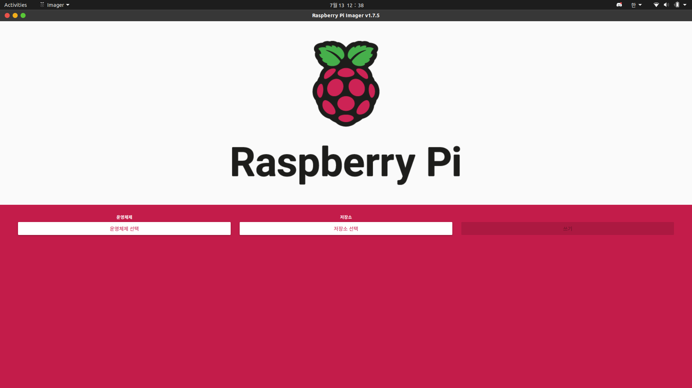

#Terminal
sudo apt install mariadb-server
sudo apt install mariadb-client데이터베이스 만들기
SQL
LINUX
라즈베리파이, MySQL, MariaDB, 원격연결
라즈베리파이
os 설치
라즈베리파이에 os를 설치하기 위해 먼저 PC에 Raspberry Pi Imager를 설치한다.

이미지 파일을 따로 다운받아서
운영체제 -> 사용자 정의 사용 -> 다운받은 이미지 파일
저장소 -> 사용할 SD카드
경로로 쓰기 하였다.
이미지 쓰기를 완료한 후, SD카드를 라즈베리파이에 꽃아 부팅한다.
MariaDB 세팅
라즈베리파이에 인터넷 연결을 하고 MariaDB를 설치한다.
root 비밀번호 설정, 익명계정, 원격접속 허용 여부를 설정한다.
실행
#Terminal
sudo mysql -u root -proot 유저로(-u) 비밀번호(-p) 인증 접속
#Terminal
sungil@sungil-950QDB:~$ mysql -u root -p
Enter password:
Welcome to the MariaDB monitor. Commands end with ; or \g.
Your MariaDB connection id is 11
Server version: 10.3.38-MariaDB-0ubuntu0.20.04.1 Ubuntu 20.04
Copyright (c) 2000, 2018, Oracle, MariaDB Corporation Ab and others.
Type 'help;' or '\h' for help. Type '\c' to clear the current input statement.show databases; 명령어로 데이터베이스 목록을 볼 수 있다.
기본 데이터베이스 3개를 확인할 수 있다.
MariaDB [(none)]> show databases;
+--------------------+
| Database |
+--------------------+
| information_schema |
| mysql |
| performance_schema |
+--------------------+
4 rows in set (0.010 sec)create database '데이터베이스 이름'; 명령어로 새 데이터베이스를 만들 수 있다.
drop database '데이터베이스 이름'; 으로 데이터베이스를 삭제한다.
MariaDB [(none)]> create database new_db;
Query OK, 1 row affected (0.001 sec)MariaDB [(none)]> show databases;
+--------------------+
| Database |
+--------------------+
| information_schema |
| mysql |
| new_db |
| performance_schema |
+--------------------+
5 rows in set (0.001 sec)select host,user,plugin,authentication_string from mysql.user; 명령어로 유저명과 보안방식을 볼 수 있다.
MariaDB [(none)]> select host,user,plugin,authentication_string from mysql.user;
+-----------+------+-----------------------+-------------------------------------------+
| host | user | plugin | authentication_string |
+-----------+------+-----------------------+-------------------------------------------+
| localhost | root | mysql_native_password | *3E9FEA9A673179BFC73F9E1357E81FE84FDE72B6 |
| % | root | | |
+-----------+------+-----------------------+-------------------------------------------+
3 rows in set (0.000 sec)